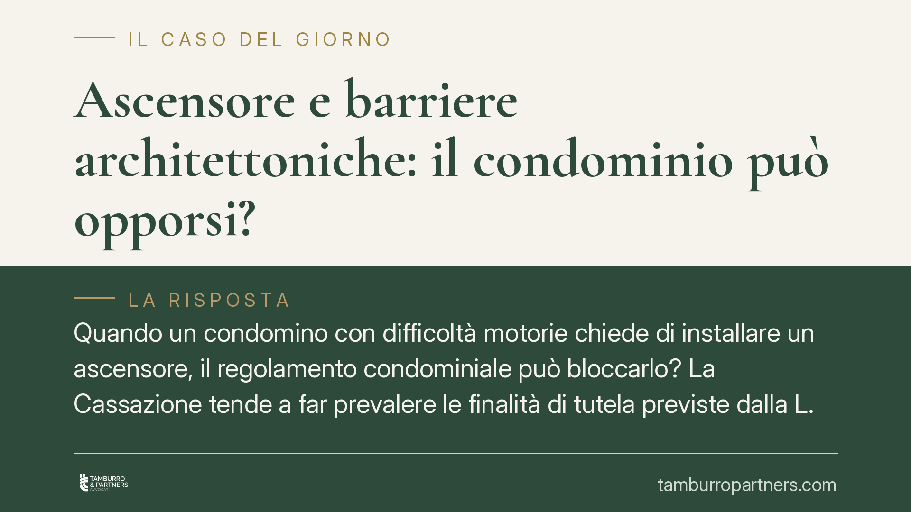

Ascensore e barriere architettoniche: il condominio può opporsi?
Quando un condomino con difficoltà motorie chiede di installare un ascensore, il regolamento condominiale può bloccarlo? La Cassazione tende a far prevalere le finalità di tutela previste dalla L. 13/1989 sulle clausole restrittive, ma restano limiti precisi. Capire chi decide, con quali maggioranze e chi paga è essenziale per evitare contenziosi lunghi e costosi.

Il caso tipico
Un condomino con ridotta capacità motoria chiede di installare un ascensore, oppure di sopraelevare quello esistente, per raggiungere il proprio piano. Il regolamento condominiale, però, prevede una clausola che subordina ogni intervento di questo tipo all'autorizzazione dell'assemblea. L'assemblea nega. Chi prevale?
La questione tocca due piani diversi: da un lato la tutela del condomino disabile, oggetto di una normativa a finalità pubblicistica; dall'altro il diritto degli altri condomini a conservare le parti comuni e il decoro dell'edificio.
Inquadramento normativo
Il riferimento centrale è la Legge 9 gennaio 1989, n. 13, sull'eliminazione delle barriere architettoniche negli edifici privati. L'art. 2 della L. 13/1989 introduce maggioranze assembleari agevolate per l'approvazione delle opere dirette a superare le barriere: la deliberazione può essere adottata con le maggioranze previste per la gestione ordinaria, più basse rispetto a quelle ordinariamente richieste per le innovazioni.
Sul versante codicistico, l'art. 1120, comma 2, c.c., come riformato dalla L. 220/2012, qualifica le opere per l'abbattimento delle barriere architettoniche come innovazioni "agevolate", deliberabili con la maggioranza degli intervenuti e almeno la metà del valore dell'edificio (art. 1136, comma 2, c.c.). Si tratta del regime applicabile quando l'opera è deliberata dall'assemblea e grava sul condominio.
Diverso è il caso in cui il singolo condomino realizzi l'intervento a proprie spese. Qui opera l'art. 1102 c.c., che consente a ciascun comproprietario di servirsi della cosa comune, purché non ne alteri la destinazione e non impedisca agli altri di farne pari uso. La giurisprudenza legge questo limite alla luce del principio di solidarietà condominiale: il sacrificio imposto agli altri condomini è tollerabile se proporzionato e se l'opera risponde a un'esigenza di accessibilità effettiva.
La Corte di Cassazione, in più pronunce, ha affermato che le clausole del regolamento che vietano o condizionano in modo assoluto questi interventi sono recessive rispetto alle finalità della L. 13/1989. Trattandosi di orientamento che richiede conferma caso per caso, è opportuno verificare la pronuncia specifica applicabile alla singola fattispecie prima di assumere decisioni.
Implicazioni pratiche
La distinzione tra i due regimi cambia tutto.
Se l'opera è a spese del singolo (art. 1102 c.c.), il condomino può installare l'ascensore anche senza il consenso degli altri, a condizione di non comprometterne il pari uso né la stabilità e il decoro dell'edificio. Il regolamento non può introdurre un divieto assoluto in contrasto con la L. 13/1989.
Se l'opera è deliberata dall'assemblea e posta a carico del condominio (art. 1120 c.c.), si applicano le maggioranze agevolate: il diniego richiede una motivazione solida, legata a impedimenti tecnici reali o a pregiudizi concreti per la sicurezza o la statica.
In entrambi i casi, l'onere della prova grava su chi si oppone: è il condominio, o il condomino contrario, a dover dimostrare che l'intervento è lesivo del pari uso, della stabilità o del decoro. Non basta un'opposizione generica.
Cosa fare in concreto
- Verificate il regolamento condominiale: individuate le clausole che condizionano gli interventi sulle parti comuni e valutatene la compatibilità con la L. 13/1989.
- Qualificate correttamente l'intervento: stabilite se l'opera è a spese del singolo (art. 1102 c.c.) o a carico del condominio (art. 1120 c.c.), perché il regime e le maggioranze cambiano.
- Acquisite una relazione tecnica: un progetto che documenti il rispetto della stabilità, del decoro e del pari uso rafforza la posizione del richiedente e limita i margini di opposizione.
- Documentate le ragioni dell'eventuale diniego: un'opposizione sorretta da elementi tecnici concreti è ben diversa da un rifiuto motivato solo dalla clausola regolamentare.
- Valutate la fattibilità di soluzioni alternative: servoscala o piattaforme elevatrici possono rappresentare opzioni compatibili dove l'ascensore presenti ostacoli strutturali.
È opportuno analizzare la documentazione tecnica e la giurisprudenza aggiornata alla singola situazione, poiché l'esito dipende in misura rilevante dalle caratteristiche concrete dell'edificio e dell'intervento.
---
*Contributo informativo a cura di Tamburro & Partners - Avv. Giuseppe Tamburro. Non costituisce parere legale.*
Ogni condominio ha una storia a sé.
Se gestisci un'amministrazione e vuoi un confronto su una specifica questione condominiale, scrivi allo studio. Ti rispondiamo entro un giorno lavorativo.